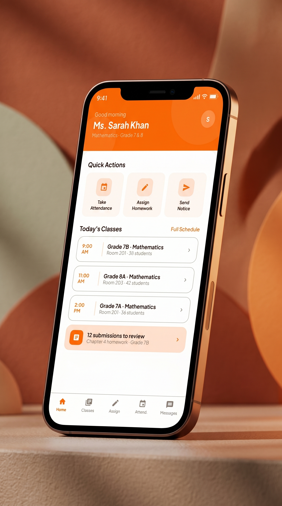
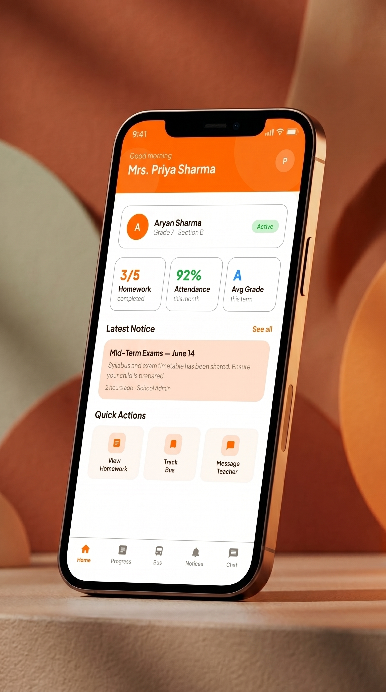
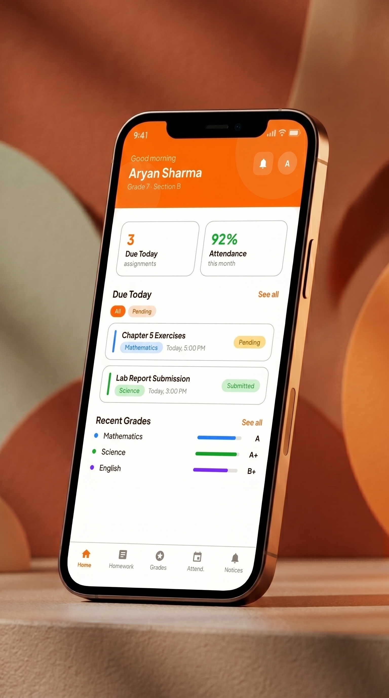
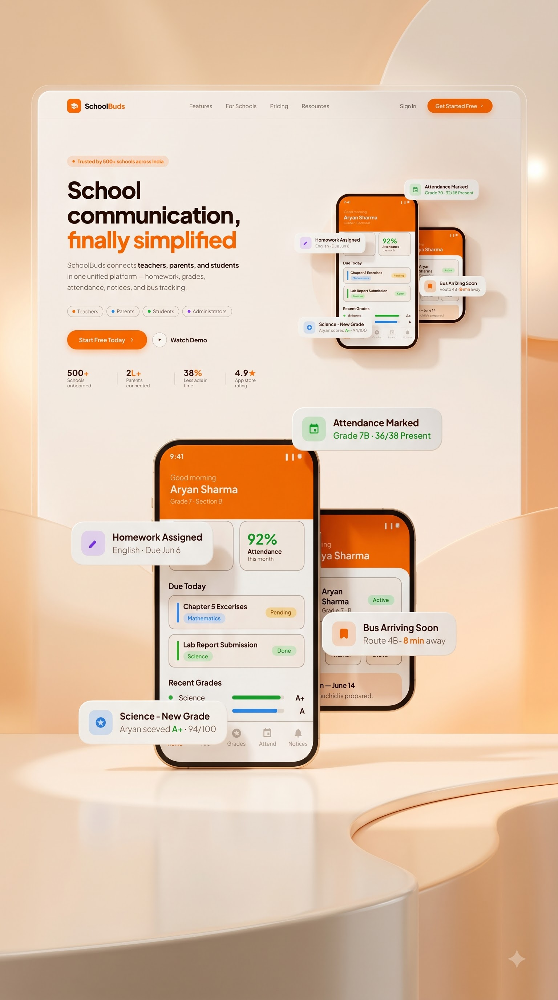
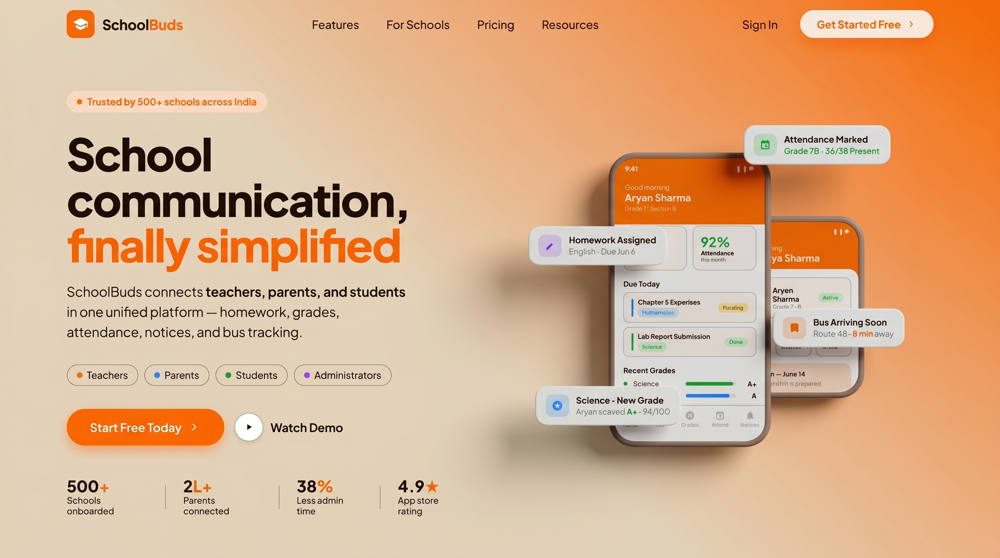
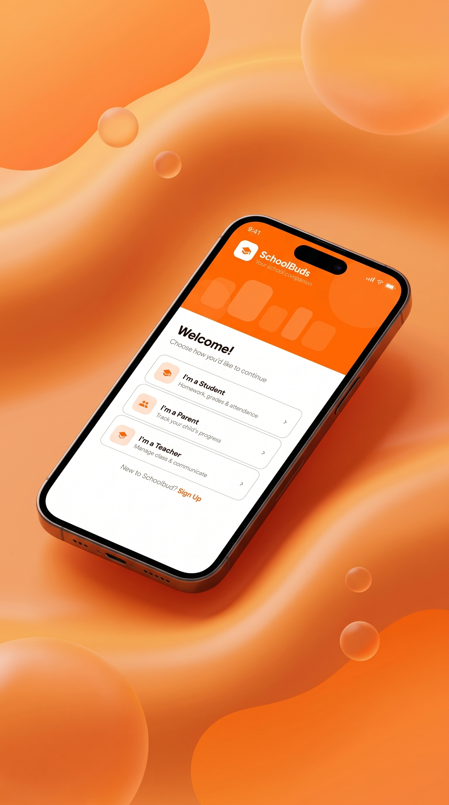
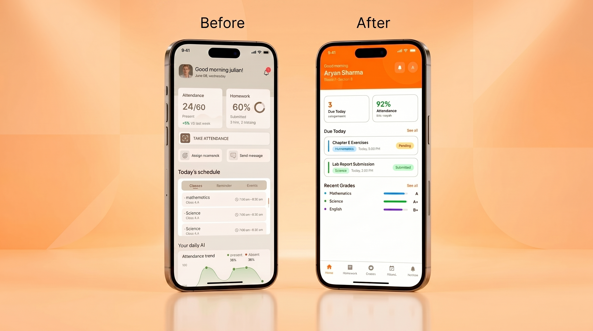
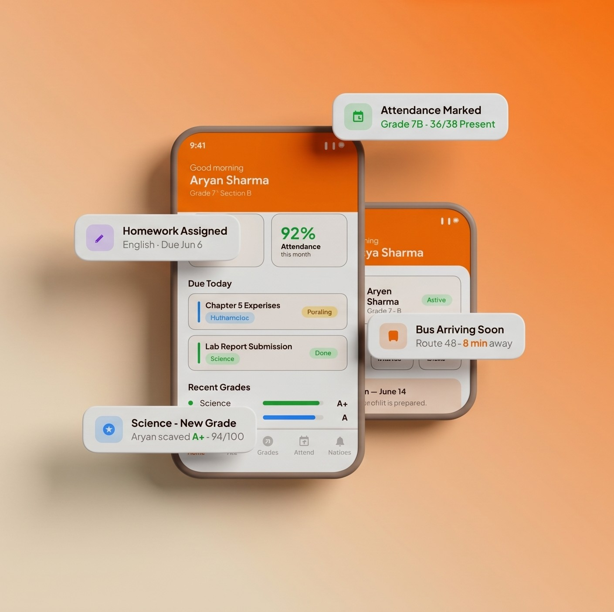

Edu Platform
"Redesigning a fragmented school management system into a clean, three-role SaaS platform that connects teachers, parents, and students through one unified design language."
Client: SchoolBuds
School management & communication SaaS
SchoolBuds is a school communication platform designed to eliminate the fragmentation between teachers, parents, and students. The existing software suffered from severe information overload — home screens with 12+ competing widgets, ambiguous data formats, and no real-time safety tracking. The redesign built three distinct but visually consistent interfaces from a single shared design system, reducing daily admin time to a series of single taps.
Key Features
- Style: Clean, warm-orange SaaS interface — light backgrounds, role-colour-coded accents, system-clarity first.
- Target Audience: School teachers, parents of K-12 students, and students aged 10–18.
- Teacher Console: 3-zone layout (Identity / Quick Actions / Today's Classes) — roll call and assignments in single taps.
- Parent Dashboard: child-switcher profile cards, attendance percentage charts, exam countdown cards, and GPS bus push alerts.
- Student Portal: class progress meters, pending homework cards, and direct teacher feedback channels.
- Before/after redesign: replaced 12+ dashboard widgets with focused, role-specific information hierarchies.
- Unified brand identity including logo, colour palette, and typography across all three user interfaces.

Screens







Dashboard bloat kills daily workflow.
Legacy school portals force teachers to scroll past 12+ competing widgets just to take a 5-second attendance check. Parents receive raw fractions ("24/60 present") with no context or safety tracking. The information architecture was designed around features, not around the actual daily tasks of each role.
Three roles. One design language.
A full UX audit mapped every daily teacher, parent, and student task, then restructured each interface into focused zones that serve those specific workflows. The teacher home was reduced to three zones. Parent views gained semantic attendance charts and GPS-triggered push alerts. The same design tokens power all three interfaces — maintaining brand cohesion without forcing a one-size UI.
Three stakeholders. Zero compromises.
SchoolBuds demonstrates the discipline of multi-role product design — where the same system has to work intuitively for a 45-year-old teacher taking roll call, a parent checking bus location on a commute, and a student glancing at homework before dinner. The redesign resolved all three through role-first information architecture and a shared component library.
← Back to Home